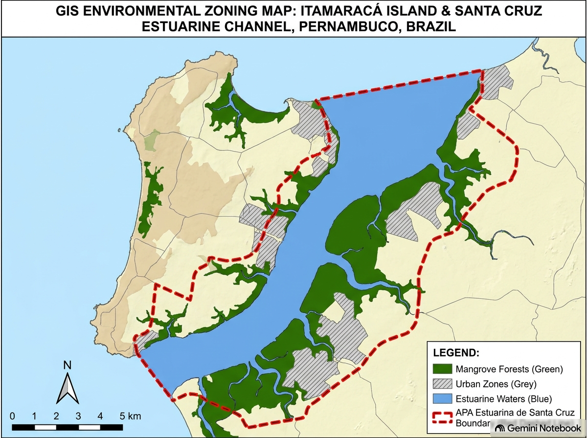

1. Memorial Descritivo da Área — Ilha de Itamaracá
Este documento contou com o auxílio de inteligência artificial (Gemini Notebook) exclusivamente para suporte à revisão gramatical, formatação da linguagem Quarto (.qmd) e estruturação do texto, mantendo a integridade técnica do diagnóstico de campo e dos dados científicos do PIBIC UFPE elaborados pelo autor.
1. Localização e Contexto Geográfico da Ilha de Itamaracá
A área selecionada como unidade de planejamento e proposta de intervenção ecológica abrange a totalidade do território municipal da Ilha de Itamaracá, compreendendo uma superfície insular de 8.311,91 hectares (83,12 km²) no litoral norte do Estado de Pernambuco. O ecossistema insular é delimitado a leste pelo Oceano Atlântico e a oeste pela calha hídrica do Canal de Santa Cruz, estuário que separa a ilha do continente.
- Unidade Territorial de Análise: Ilha de Itamaracá em sua totalidade (área emersa insular, zona entremarés, faixa praiana e franja de manguezal estuarino).
- Coordenadas Geográficas de Referência da Ilha (Ponto Central do Pilar): 7°46’36.48” S e 34°53’43.04” O (Latitude:
-7.776800° S; Longitude:-34.895289° O). - Inserção na Unidade de Conservação Regional: A Ilha de Itamaracá está integralmente inserida na Área de Proteção Ambiental (APA) Estuarina de Santa Cruz (unidade de conservação estadual com 38.692,34 hectares totais, regida pelo Decreto Estadual nº 32.488/2008), que atua como o arcabouço legal de gestão ambiental regional.
- Sítio Focal de Intervenção e Amostragem Piloto: Como recorte de amostragem direta e implantação das estruturas piloto de infraestrutura verde (wetlands e ecobarreiras), definiu-se um setor focal de 5,4 hectares situado na orla periurbana do Bairro do Pilar / Bairro Novo, ao longo da margem estuarina do Canal de Santa Cruz (250 m de linha de orla por 70 m de largura de zona entremarés).
- Bioma e Fitofisionomias Insulares: A ilha pertence ao bioma Mata Atlântica, abrigando um mosaico vegetal composto por manguezal estuarino (Rhizophora mangle, Avicennia schaueriana e Laguncularia racemosa), vegetação de restinga costeira e remanescentes de floresta estuarina e mata de encosta.
- Bacia Hidrográfica e Inserção Estuarina: A ilha integra a bacia do Canal de Santa Cruz (Grupo de Bacias GL-1), recebendo influência direta das águas continentais dos rios Botafogo, Igarassu e Maniquara, criando um gradiente microclimático e físico-químico único ao longo de toda a costa oeste da ilha.
2. Caracterização do Uso Atual e Histórico no Território Insular
- Uso Histórico e Extrativismo Tradicional: O território da Ilha de Itamaracá possui histórico centenário sustentado pelo extrativismo da pesca artesanal de subsistência e comercialização local (captura de moluscos e decápodes, com destaque para o siri-pimenta Callinectes marginatus), articulado pela Colônia de Pescadores Z-11 e marisqueiras dos bairros do Pilar, Jaguaribe, Forno da Cal e Forte Orange.
- Dinâmica de Cobertura Vegetal na Ilha (MapBiomas 1985–2025): A análise dos dados de sensoriamento remoto demonstra que o ecossistema estuarino da ilha apresentou resiliência biótica, registrando uma recuperação de +13,81% na cobertura de floresta de mangue nas últimas quatro décadas. Contudo, essa recuperação na calha estuarina contrasta com a degradação intensa das faixas de borda urbana.
- Agentes Históricos e Atuais de Degradação na Ilha:
- Expansão Urbana Desordenada e Loteamentos de Veraneio: Abertura de vias, aterro de franjas de mangue e restinga e construção de residências turísticas na orla, promovendo a fragmentação do habitat costeiro da ilha.
- Lançamento de Efluentes e Lixo Urbano: Ausência de sistema público de esgotamento sanitário nos bairros da ilha, resultando no descarte contínuo de esgoto doméstico in natura e resíduos plásticos nos canais e praias insulares.
- Privatização da Orla e Pressão Antrópica: Bloqueio de caminhos de acesso tradicional às praias por empreendimentos imobiliários e turismo náutico desordenado.
- Situação Fundiária: Terrenos públicos sob regime de Unidade de Conservação de Uso Sustentável (APA de Santa Cruz), Marinha e Áreas de Preservação Permanente (APP).
3. Diagnóstico Ecológico de Campo na Ilha de Itamaracá
- Dinâmica Físico-Química e Gradiente de Salinidade: As águas que circundam a ilha apresentam um gradiente espacial contínuo, partindo de médias de 21,89‰ nos canais estuarinos internos e elevando-se até 28,89‰ na foz do Canal de Santa Cruz e costa atlântica. A temperatura da água atinge picos de 32,79°C nas zonas de menor circulação hídrica do interior do canal.
- Cobertura Vegetal e Regeneração na Borda Insular: A vegetação de manguezal e restinga ao longo da orla da ilha apresenta-se fragmentada por clareiras e pontos de aterro. A regeneração espontânea é limitada pela compactação do solo e acúmulo de resíduos sólidos nas raízes respiratórias.
- Função de Berçário Estuarino e Fauna Recrutada: Amostragens biológicas do PIBIC/UFPE comprovam que a costa oeste e os canais da Ilha de Itamaracá cumprem a função ecológica vital de berçário estuarino para populações de crustáceos e peixes. Na zona interna do canal, 77,78% das fêmeas e 67,51% dos machos de Callinectes marginatus são indivíduos juvenis e imaturos que dependem da salubridade das margens da ilha para crescimento somático.
4. Diagnóstico do Contexto de Paisagem Insular
- Matriz e Fragmentação: A paisagem da Ilha de Itamaracá constitui um mosaico onde remanescentes de manguezal, restinga e mata atlântica interagem com uma matriz urbana em expansão (bairros do Pilar, Jaguaribe, Forte Orange e Vila Velha).
- Conectividade Ecológica e Barreiras: O Canal de Santa Cruz atua como corredor ecológico hídrico regional. Contudo, a poluição por esgoto e o acúmulo de plástico nas margens da ilha funcionam como barreiras químicas e físicas.
- Mapeamento do Entorno: Na escala insular, aproximadamente 40% do território compreende ecossistemas nativos preservados (mangue e corpos d’água), enquanto 60% corresponde a áreas urbanizadas, malha viária, solos expostos e áreas degradadas de borda.
5. Classificação da Ilha como Ecossistema Híbrido
Com base na tipologia de Hobbs et al. (2006, 2014): * Classificação: Ecossistema Híbrido Insular. * Justificativa Conceitual: A Ilha de Itamaracá preserva a composição de espécies nativas e o papel funcional ecológico (berçário da fauna estuarina). Contudo, as condições abióticas originais do solo e da água foram alteradas de forma irreversível pela ocupação urbana e contaminação por efluentes domésticos, exigindo restauração assistida com infraestrutura verde.
6. Registros e Mapeamento de Campo
Mapa de Localização Regional da Ilha de Itamaracá

Fotografias de Campo
(Espaço reservado para as fotografias de campo reais da Ilha de Itamaracá)